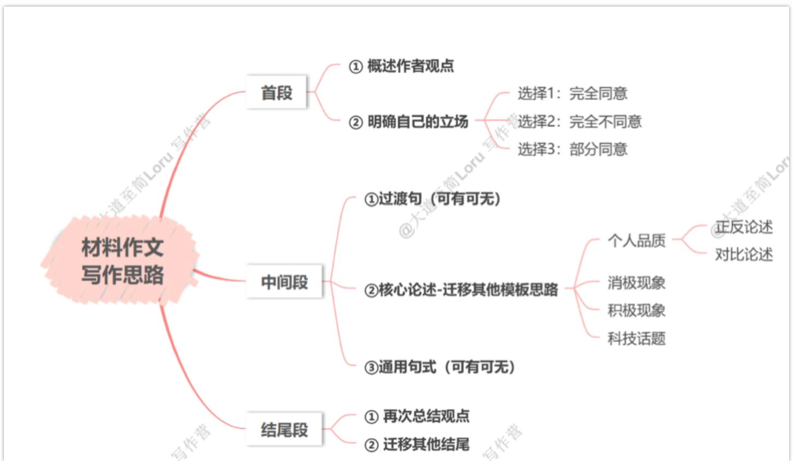

大作文
▼ 材料作文

真题例子
Read the following excerpt from an article and write an essay. In your essay, you should explain whether or to what extent you agree with the author. Support your argument with reasons and relevant examples.
Write your answer in 160-200 words on the ANSWER SHEET. (20points)
Many of us, whatever our field of work, fear that showing uncertainty can damage our image—and we may compensate by expressing overconfidence in an attempt to win trust. But in many situations people are willing to trust those who can admit they don’t have a definitive answer. Recent studies found that communicating uncertainty and even admitting our mistakes is not harmful and can even be beneficial to trustworthiness. So failure in “expertise” can be compensated by higher integrity and benevolence. When communicating uncertainty in a transparent way, we are perceived as less biased and willing to tell the truth.
[题干翻译]
阅读下面的文章节选，同时写一篇文章。在在你的文章中，你应该解释你是否或者在什么程度上同意作者的观点。使用原因和相关例子来支持你的论点。在答题纸上写下160-200字的答案。(20分)
[文章节选翻译]
我们当中许多人，无论从事哪个领域的工作，都会担心表现出不确定性会损害自己的形象，因此我们可能通过表现得过于自信来弥补，以试图赢得信任。然而，在许多情况下，人们反而更愿意信任那些能够承认自己没有明确答案的人。最近的研究发现，传达不确定性，甚至承认自己的错误，不仅无害，反而有助于提升可信度。因此，专业知识上的不足可以通过更高的诚信和善意来弥补。当我们以透明的方式传达不确定性时，人们会认为我们更客观，并且更愿意说出真相。
首段
① 概述作者观点
This is a simple but enlightening excerpt from an article, in which the author informs us that [文章观点，从文章中摘抄]
a simple but enlightening 替换:
a straightforward yet thought-provoking
a concise yet illuminating
the author informs us that 替换:
the author points out that…
the author highlights that…
the author suggests that…
②明确自己的立场
I completely agree with this idea. 我完全同意这个观点。
I strongly support this perspective. 我强烈支持这一观点。
Not only do I agree with this idea, but I also find it highly insightful. 我不仅同意这个观点，还认为它非常有洞见。
Compared to opposing arguments, this idea is far more convincing, and I completely agree. 与反对观点相比，这个观点更加令人信服，我完全同意。
选择2：完全不同意
I completely disagree with this idea.
我完全不同意这个观点。
I strongly oppose this viewpoint.
我强烈反对这一观点。
Not only do I disagree with this idea, but I also believe it is fundamentally flawed.
我不仅不同意这个观点，还认为它从根本上就是错误的。
Although this perspective seems logical at first glance, I strongly disagree with its conclusions.
尽管这一观点乍一看似乎有道理，但我强烈反对它的结论。
Although some may agree with this idea, I believe the opposite is true.
尽管有些人可能同意这一观点，但我认为事实恰恰相反。
选择3：部分同意（辩证）
While I agree with this idea to some extent, I believe there are other important aspects that need to be considered.
虽然我在某种程度上同意这个观点，但我认为还有其他重要方面需要考虑。
I neither fully agree nor completely disagree with this idea, as both sides have valid points.
我既不完全同意也不完全反对这个观点，因为双方都有合理之处。
中间段
过渡句（可要可不要）：
To better illustrate my point, I will elaborate on my reasons below.
为了更好地阐明我的观点，我将在下文详细说明我的理由。
To further explain my viewpoint, I will present my reasoning below.
为了进一步解释我的观点，我将在下文阐述我的理由。
To illustrate my perspective clearly, I will outline my reasoning.
为了清晰地说明我的看法，我将概述我的理由。
Such a perspective deserves further analysis, as I will illustrate
below. 这样的观点值得进一步分析，我将在下文进行说明。
② 核心论述–可以迁移大作文的论述框架
[正反论述]2012&2019 模板+ the more …the more 句型
① Throughout life, we are bound to encounter various uncertainties and make mistakes. ② In these moments, it is the courage to admit our mistakes that enables us to navigate difficulties and win trust from others. ③ On the contrary, unwillingness to communicate uncertainties can cause people to confine themselves to their own perspectives, which not only hampers progress but also limits personal growth and achievement. ④ For instance, in our daily life and studies, teamwork is essential for solving complex problems. ⑤ The more we adopt an open-minded attitude toward mistakes, the easier it becomes to foster trust and mutual respect among team members.
① 在人生中，我们注定会遇到各种不确定性，注定会犯错误。② 在这些时刻，正是承认错误的勇气让我们能够克服困难并赢得他人的信任。③ 相反，不愿意表达不确定性会导致人们局限于自己的视角，这不仅阻碍了进步，还限制了个人成长和成就。④ 例如，在日常生活和学习中，团队合作对于解决复杂问题至关重要。⑤ 我们越是以开放的态度对待错误，就越容易在团队成员之间建立信任和相互尊重。
[对比论述]变形框架 2018 年思路 2
① In our daily life, some people may be inclined to conceal their mistakes or express overconfidence when they confront uncertainties, as it seems more appealing at first. ② In doing so, they might gain temporary trust, but this comes at the cost of the precious opportunities to foster long-term trust and build genuine relationships. ③ By contrast, some courageous individuals may choose to admit their mistakes and communicate uncertainties, fully aware of the valuable benefits this approach can bring. ④ They understand that acknowledging their errors and limitations can not only foster personal growth but also enhance trustworthiness.
① 在日常生活中，一些人可能倾向于在面对不确定性时掩饰自己的错误或表现出过度自信，因为这在一开始似乎更有吸引力。② 通过这样做，他们可能获得短暂的信任，但这会以失去培养长期信任和建立真诚关系的宝贵机会为代价。③ 相反，一些勇敢的人可能会选择承认自己的错误并传达不确定性，充分意识到这种做法所带来的宝贵益处。④ 他们明白，承认自己的错误和局限不仅可以促进个人成长，还能提升可信度。
③ 通用句式
选择1：完全同意
That is to say, acting on the advice of the author will certainly do more good than harm.
也就是说，采纳作者的建议肯定会利大于弊。
选择 2：完全不同意
That is to say, the approach proposed by the author is more harmful than beneficial in practice.
也就是说，作者提出的方法在实际中弊大于利。
选择3：部分同意（辩证）
That is to say, while the author’s advice holds some merit, its effectiveness may be limited in certain situations.
也就是说，尽管作者的建议有一定道理，但在某些情况下其效果可能有限。
结尾段
① 再次总结作者的观点
选择1：完全同意
To conclude, the point made by the author is entirely sound and deserves consideration. 总结来说，作者的观点完全正确，值得关注。
选择2：完全不同意
In summary, the perspective presented by the author lacks sufficient evidence to be fully convincing.
总之，作者提出的观点缺乏足够的证据，无法完全令人信服。
选择3：部分同意
In summary, while the author’s perspective is valid to some extent, it overlooks certain critical dimensions of the issue.
总之，虽然作者的观点在某种程度上是合理的，但忽视了问题的一些关键方面。
迁移个人品质的结尾段
① 成功的基石
In summary, the way we treat uncertainties and mistakes is the foundation upon which success is built.
总之，我们对待不确定性和错误的方式是成功的基石。
② 展望未来
Looking ahead, those who embrace uncertainties and learn from their mistakes will be better equipped to tackle the challenges that lie ahead. By remaining authentic to ourselves and others, we create countless opportunities for progress, win trust from others and pave the way for success in life’s journey.
展望未来，那些能够拥抱不确定性并从错误中汲取教训的人，将能够更好地应对未来的挑战。通过对自己和他人保持真诚，我们创造了无数进步的机会，赢得他人的信任，并为人生旅程中的成功铺平道路。
③ 深远影响
In summary, the way we treat uncertainties and mistakes has a profound and lasting impact on our personal growth and interpersonal relationships.
总之，我们对待不确定性和错误的方式对我们的个人成长和人际关系产生了深远而持久的影响。
④ 真正的价值
In summary, the true value of mistakes lies in the insights gained from communicating our uncertainties with others.
总之，错误的真正价值在于通过与他人交流我们的不确定性所获得的洞见。
⑤ Only 倒装结构
Only through willingness to communicate uncertainty can we acquire the most valuable knowledge and build genuine trust with others.
只有愿意沟通不确定性，我们才能获得最宝贵的知识，并与他人建立真诚的信任。
⑥ 应该如何做
Therefore, it is wise for us to communicate uncertainties in a transparent way rather than conceal them, as transparency fosters trust and deeper understanding.
因此，我们应该以透明的方式传达不确定性，而不是掩盖它们，因为坦诚能够建立信任并促进更深层次的理解。
⑦ 引用谚语
As the saying goes, “Honesty is the best policy.”
俗话说：“诚实为上策。”